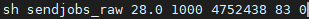

Scripts externos
En esta sección se describirá un script externo que se usa para ejeutar varias simulaciones en paralelo.
Para ejecutar simultáneamente varias simulaciones en GAMOS dentro de DZero y DZero1 existe un código creado ya probado. Este código fue escrito por algunos miembros del Laboratorio de Altas Energías y permite ejecutar un determinado número de simulaciones a partir de ciertos parámetros de entrada. Hay dos versiones de este código que permiten correr tanto simulaciones para obtener imágenes crudas o RAW de un fantoma como también para obtener imágenes de campo plano o Flat Field (FF). El código está escrito en bash y recibe como entrada cinco parámetros.
El primer parámetro de entrada, que es voltaje de la fuente, debe ser un número con un solo decimal, separado por un punto. Para este código se asume que el archivo que contiene el espectro de energías de la fuente tiene un nombre que sigue el siguiente formato: Si el voltaje de la fuente es, por ejemplo, 28 keV, entonces el archivo se debe llamar 28.0keV. Si por otra parte el voltaje es, por ejemplo, 10.3 keV, entonces el archivo debería llamarse 10.3keV. El segundo parámetro de entrada debe ser un número entre 1000 y 5000, llamado semilla aleatoria, que permite que los resultados de cada simulación sean estadísticamente independientes. El tercer parámetro es un número entero que dicta a cada una de las simulaciones cuántos fotones crear desde la fuente de rayos X simulada. El cuarto parámetro es un número entero que representa el número de simulaciones que se quieren ejecutar. Por último, el quinto parámetro es un índice que permite diferenciar cada uno de los archivos de salida de cada simulación. Si llamamos i al índice y nj al número de simulaciones que se quieren ejecutar, entonces los archivos resultantes tendrán en su nombre un número distintivo, desde el i hasta el i + nj. El script también asume que el nombre del archivo que contiene todos los parámetros no geométricos de la simulación tiene por nombre raw.in en el caso de querer obtener imágenes crudas o FF.in en el caso de querer ejecutar simulaciones para obtener imágenes de campo plano.
A grandes rasgos lo que realiza este código es crear un número de copias del archivo que contiene los parámetros no geométricos de la simulación igual al número de simulaciones que se quieren correr y ejecutar cada una de estas copias como procesos en segundo plano del servidor. Sin embargo, cada código está comentado debidamente para que cada línea se pueda entender fácilmente. El código tanto para correr imágenes crudas como de campo plano se encuentran en este enlace con los nombres sendjobs_raw y sendjobs_FF respectivamente. Para correr el código basta simplemente con ejecutar en consola algo como lo siguiente:
En este caso se está corriendo el código para obtener 83 imágenes crudas, con un voltaje de fuente de 28.0 kV, una semilla aleatoria de 1000, un número de fotones de 475243 y con un índice inicial de cero.
Una vez ejecutados los procesos se puede vigilar el estado de estos a través del comando top. Usando este comando se podrán observar todos los procesos que se están ejecutando en el servidor, así como el usuario que los ejecutó. Para salir de esta ventana basta con escribir .q y dar enter. En el mismo enlace donde se encuentran los scripts anteriormente descritos se encuentran algunos cuadernos de Jupyter que serán de utilidad para poder procesar los resultados obtenidos de GAMOS.